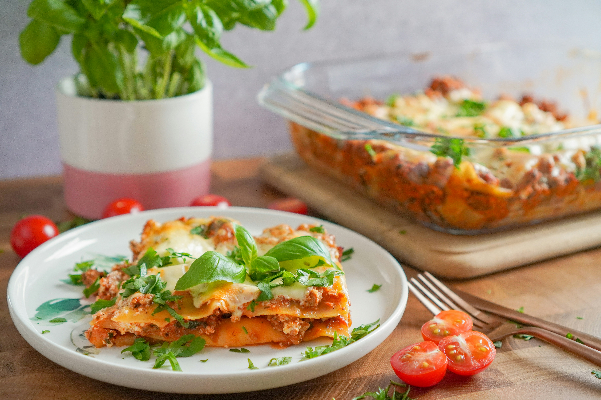

Lasanga

Home
Description
Lasagna is a classic Italian dish made with layers of pasta, rich meat sauce, creamy bechamel, and melted cheese. It's a hearty and comforting meal that is perfect for family dinners or special occasions. The combination of flavors and textures makes lasagna a favorite among many.
Ingredients
- 1/2 cup chopped onion
- 2 cloves garlic, minced
- 1 (28 ounce) can crushed tomatoes
- 2 (6 ounce) cans tomato paste
- 2 (6.5 ounce) cans canned tomato sauce
- 1/2 cup water
- 2 tablespoons white sugar
- 1 1/2 teaspoons dried basil leaves
- 1/2 teaspoon fennel seeds
- 1 teaspoon Italian seasoning
- 1 tablespoon salt
- 1/4 teaspoon ground black pepper
- 4 tablespoons chopped fresh parsley
- 12 lasagna noodles
- 16 ounces ricotta cheese
- 1 egg
- 3/4 teaspoon salt
- 3 cups shredded mozzarella cheese
- 3/4 cup grated Parmesan cheese
Steps
- Preheat the oven to 375°F (190°C).
- In a large skillet, cook the ground beef until browned. Drain the excess fat.
- Add the onion and garlic to the skillet and cook until the onion is translucent.
- Stir in the crushed tomatoes, tomato paste, tomato sauce, water, sugar, basil, fennel seeds, Italian seasoning, salt, and black pepper.